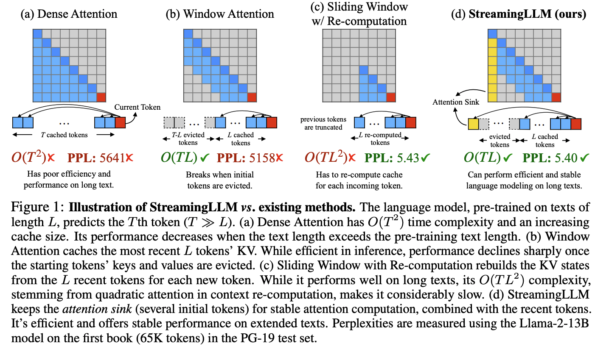
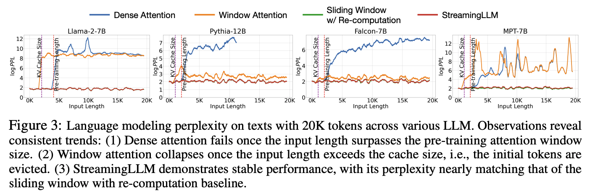
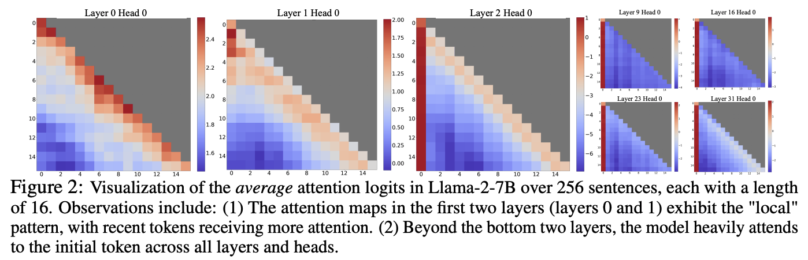

推理¶
这里以开源项目 OLMo 为例，介绍代码实现。
加速¶
- 量化（到 4-bit 量化）
-
speculative decoding（预测接下来的几个 token，类似 CPU 的分支预测）[2211.17192]

- 预言家可以是压缩过的 NAR 模型、搜索引擎等。
- 可以引入多个预言家。
-
KV cache
提升表现¶
- self-consistency（采样多个回答，选取最一致的回答）[2203.11171]
- LLM cascade（顺序调用从弱到强，同时也是成本从低到高的多个 LLM，当回答足够可靠时返回给用户，并取消后续调用）[2305.05176]
上下文长度¶
2309.17453 提出的 StreamingLLM 通过在计算注意力时固定包含前几个 token，提升了注意力计算的稳定性，使得 LLM 推理在超出预训练时的注意力窗口长度后依然{稳定}。
将 LLM 应用于无限长度的输入流（如图 1a）时，存在三个主要问题：
- 需要 attend 的 token 过多，导致时延过长（逐渐增加）。
- LLM 缓存所有 token 的 kv 状态，导致过多的内存使用。
- 当序列长度超过预训练时的注意力窗口长度时表现下降。
窗口注意力方法 [2004.05150]（如图 1b）维护一个固定大小的滑动窗口，存储最近 n 个 token 的 kv 状态。尽管它可以保持恒定的内存使用和时延，但一旦序列长度超过窗口大小，即使只是驱逐第一个 token 的 kv，困惑度也会骤增。
另一种方法（作为基线）是每次重新计算滑动窗口内所有 token 的 kv 状态（如图 1c）。其提供良好的困惑度表现，但时延过长。

为了理解窗口注意力方法的失败原因，原论文进行了一些探索。简言之，对于高层的 transformer 块，其输入很可能已经包含足够的用于预测下一个 token 的信息，因而不再需要 attend，注意力分数以集中到初始 token 的形式被丢弃（相当于丢垃圾）。一旦初始 token 被驱逐出窗口，注意力分数的分布会发生显著变化，从而严重影响（每一层的）注意力乃至最终预测。
详细解释
图 3 显示了在 20k token 文本上进行语言建模时的困惑度。显而易见的是，当文本长度超过缓存大小时，困惑度会激增，这是由于排除了初始 token 导致的。这表明，无论初始 token 与预测 token 的距离如何，它们对于维持 LLM 的稳定性都是至关重要的。

为什么在删除初始 token 的 kv 时 LLM 会出现问题呢？图 2 可视化了 Llama-2-7B 所有层和头的注意力图。我们发现，除了底部两层外，所有层和头的注意力都始终集中于初始 token。这意味着：删除这些初始 token 的 kv 将会删除 softmax 函数中分母的相当部分，导致注意力分数的分布发生显著变化，远离正常推理情形下的预期分布。

为了解释为什么注意力过度集中于初始 token——无论其在语言建模中的语义相关性如何，我们引入了 attention sink 的概念。softmax 函数的性质防止了所有受到关注的 token 具有零值。这需要在所有层的所有头中聚合一些来自其他 token 的信息，即使当前的嵌入对其预测已经包含足够的信息。因此，模型倾向于将不必要的注意力分数给到特定的 token。
由于自回归语言建模的顺序性质，初始 token 对所有后续 token 都是可见的，而后续 token 只对有限的一组后续 token 可见。因此，初始 token 更容易被训练为 attention sink，捕获不必要的注意力。我们已经注意到，LLM 通常被训练为利用多个初始 token 作为 attention sink，而不仅仅是一个。引入 4 个初始 token 作为 attention sink 足以恢复 LLM 的困惑度表现。
对于预训练过的 LLM，启用 streaming 只需要重新引入一些初始 token 的 kv 到注意力计算中，如图 1d 所示。StreamingLLM 的设计可以无缝集成到使用了相对位置编码（例如 RoPE 和 ALiBi）的 LLM 中。
StreamingLLM 采用缓存区中的相对位置而非原始文本中的相对位置，即 attention sink 和滑动窗口总是相邻的。因此对于像 RoPE 这样的编码，我们缓存引入旋转变换之前的 token 的 key。然后在每个解码阶段，我们对缓存区中的键应用旋转变换。
手动引入一个全局可训练的 attention sink token 是一个潜在的补救方案，它将作为不必要的注意力分数的存储仓库。实验显示，该方案在稳定注意力机制方面非常有效。基于此，我们建议在训练未来的 LLM 时在所有样本的起始位置都添加一个 sink token 以优化 streaming。